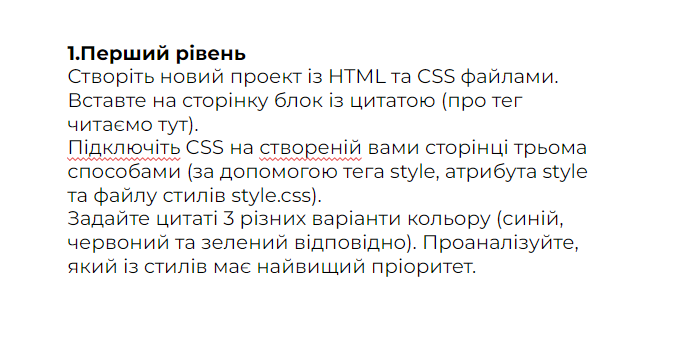
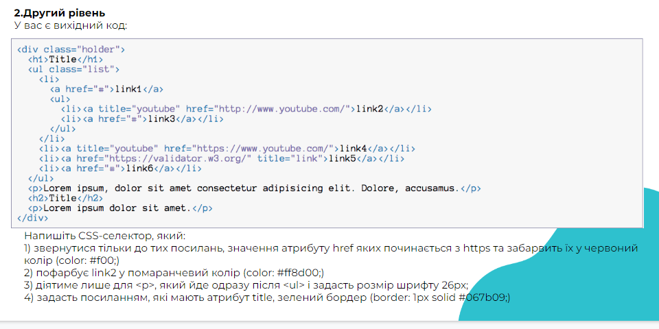
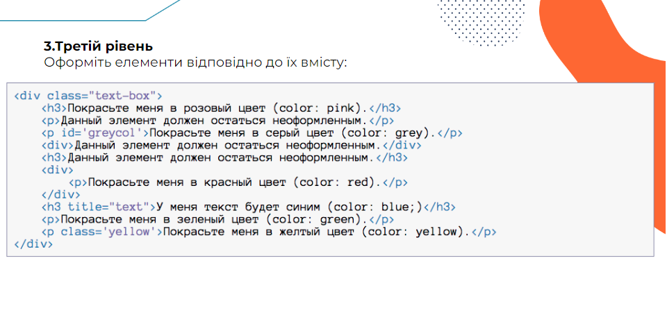
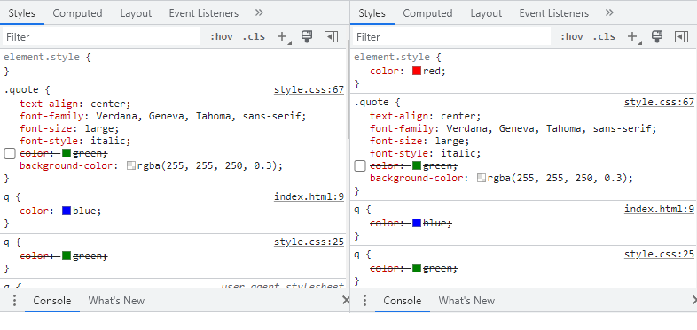

Створіть новий проект із HTML та CSS файлами.
Вставте на сторінку блок із цитатою (про тег читаємо тут).
Підключіть CSS на створеній вами сторінці трьома способами (за допомогою тега style,
атрибута style та файлу стилів style.css).
Задайте цитаті 3 різних варіанти кольору (синій, червоний та зелений відповідно).
Проаналізуйте, який із стилів має найвищий пріоритет.

Напишіть CSS-селектор, який:
1) звернутися тільки до тих посилань, значення атрибуту href
яких починається з https та забарвить їх у червоний колір (color: #f00;)
2) пофарбує link2 у помаранчевий колір (color: #ff8d00;)
3) діятиме лише для <p>, який йде одразу після <ul> і задасть розмір шрифту 26px;
4) задасть посиланням, які мають атрибут title, зелений бордер (border: 1px solid #067b09;)

Оформіть елементи відповідно до їх вмісту не змінюючи html:
